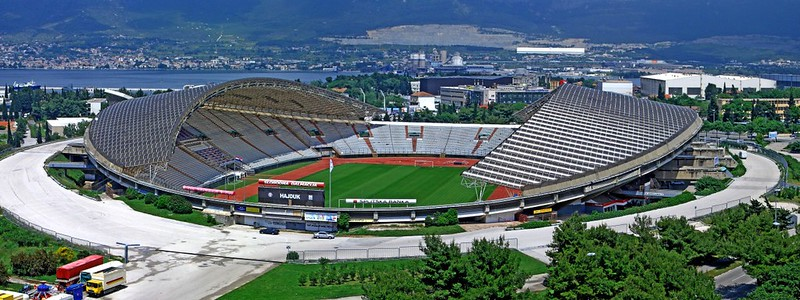
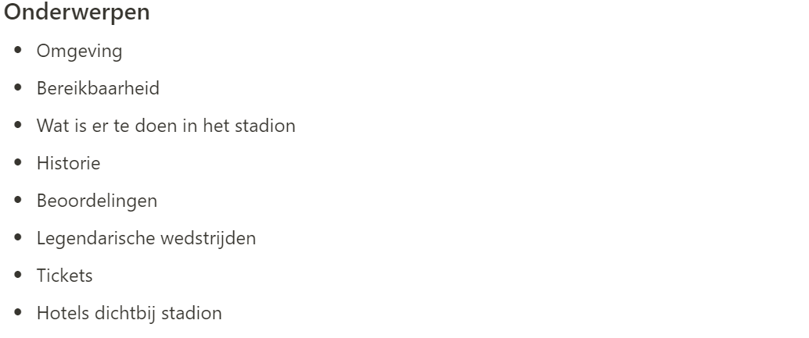
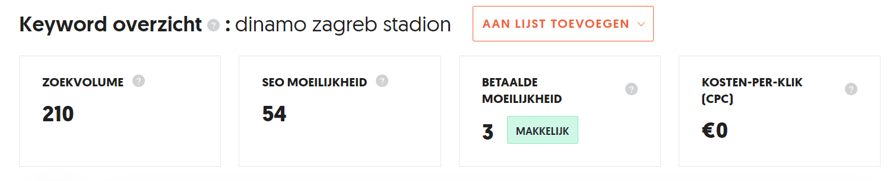
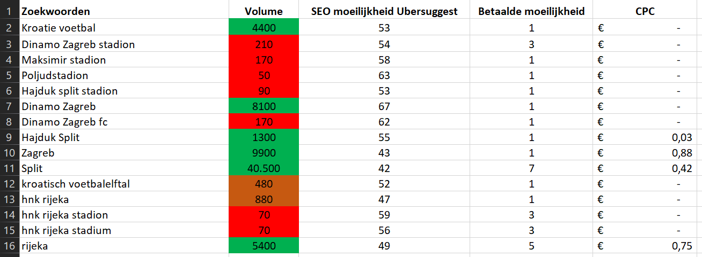
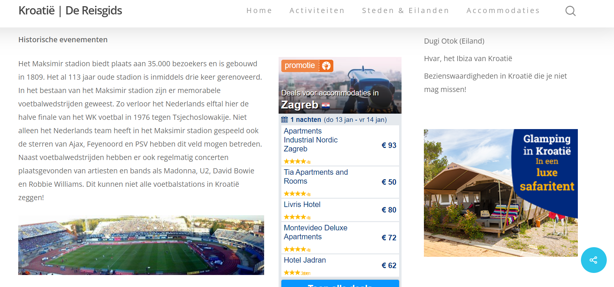
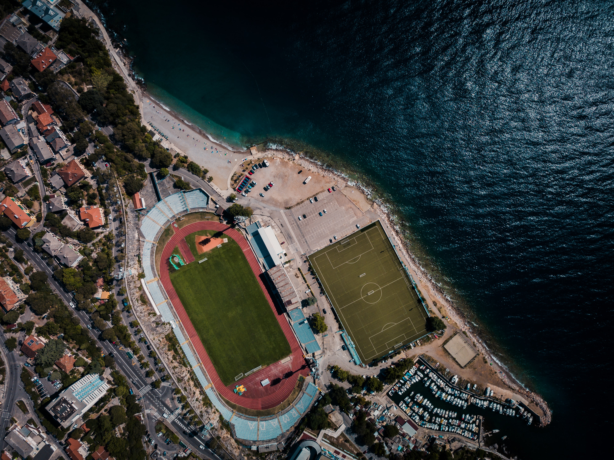

Blog Kroatische voetbalstadions gebaseerd op zoekwoordanalyse
Het schrijven van een blog over het bezoeken
van voetbalstadions in Kroatie voor de
reiswebsite van mijn groepsgenoot Ricardo.

Aanpak
Mijn groepsgenoot Ricardo Meulendijks heeft een eigen reisblog website
over Kroatie: Kroatie.online
Hier schrijft hij zijn eigen blogs over de mooiste plekjes en leukste bezienswaardigheden van Kroatië.
Tijdens dit project gaf hij aan dat het voor mij ook mogelijk was om voor mijn SEO leerdoel een blog te
schrijven op deze website
met als overkoepelend thema natuurlijk Kroatië.
Ik heb toen besloten om ook een blog te gaan schrijven. Als onderwerp heb ik hiervoor gekozen om mijn grote
hobby in een blog te verwerken namelijk voetbal. Het onderwerp van mijn blog is daarom voetbalstadions in
Kroatië.
Onderwerpen
De eerste stap was om te kijken welke stadions en welke informatie
daarbij interessant zijn voor dit type blog. Ik heb ook enkele subcategorieën bekeken van andere
voetbalstadionblogs om zo onderwerpen te kunnen achterhalen die ook interessant zijn voor mijn blog. Na een
brainstormsessie is daar een lijstje uitgekomen.

Zoekwoordanalyse
Na het uitwerken van de subcategorien van de blog heb ik een
zoekwoordanalyse uitgevoerd om te achterhalen welke zoekwoorden relevant zijn om hoog te scoren in Google.
Voor deze analyse heb ik Ubersuggest
gebruikt.

De woorden die ik heb gevonden heb ik uitgewerkt in excel bestand om zo overzichtelijk te krijgen welke
woorden ik ging toepassen in de blog. De zoekwoorden die uit het onderzoek kwamen scoorden qua zoekvolume
best aardig zoals de naam van de stadions of de naam van de club. Het nadeel van de zoekwoorden is wel dat
de SEO moeilijkheid wel aan de moeilijke kant ligt, dit begint namelijk rond de 40. Een positief punt aan de
verschillende zoekwoorden is dat de CPC overal laag ligt of zelfs nul. Mocht er dus geadverteerd worden is
het redelijk goedkoop om bovenaan te komen.

Schrijven van de blog
Gebaseerd op de zoekwoordanalyse heb ik de tekst geschreven. De
zoekwoorden daaruit heb ik in de tekst verwerkt. In de blog heb ik de drie mooiste/bekendste stadions van
Kroatië uitgewerkt. Per stadion heb ik een algemene tekst geschreven zoals welke club er in dit stadion
speelt, bouwjaar of de capaciteit van het stadion. Naast de algemene informatie wilde ik per stadion een
onderwerp uitlichten zoals memorabele momenten die in het stadion hebben plaatsgevonden of de omgeving van
het stadion.
Ik heb een eerste versie voorgelegd aan Ricardo om zo een verbeterslag te kunnen maken. Zo had ik
bijvoorbeeld in de tekst soms je gebruikt en dan weer u. Ik heb hier nu één lijn ingetrokken en u als
aanspreekvorm aangehouden.
Als titel heb ik gekozen voor een pakkende titel namelijk: De 3 mooiste voetbalstadions van Kroatië.
Hierdoor weet de bezoeker meteen dat het over voetbalstadions gaat en wordt hij getriggerd door de
genummerde lijst.

Afbeeldingen
Na het schrijven van de teksten heb ik foto’s aan de blog toegevoegd.
Voor het zoeken van bijpassende foto’s van de stadions heb ik gebruik gemaakt van Unsplash of Flickr. In
het geval van Flickr is het afhankelijk van de copyright instellingen of een afbeelding vrij te
gebruiken is. Voor enkele afbeeldingen heb ik daarom in de blog een link ingevoegd naar het
gebruiksaccount van de fotograaf. Hierdoor is het wel mogelijk om de afbeelding vrij te gebruiken.

Conclusie
Na het verwerken van de feedback en het toevoegen van de foto’s is de blog inmiddels online te vinden op
de website Kroatië online.
Reflectie
Aan het begin van het semester was ik eigenlijk helemaal niet van
plan om een blog te gaan schrijven maar tijdens het semester kreeg ik hier steeds meer interesse in om
blogs toch een keer te onderzoeken. Na het aanbod van Ricardo om een blog te gaan schrijven kon ik dit
eigenlijk niet laten liggen en heb ik een blog geschreven.
Ik vond het leuk en leerzaam om deze blog te schrijven. Het leuke aan het schrijven van de blog vond ik
dat buiten dat het doel is om de bezoekers te informeren ik ook mijzelf heb kunnen informeren. Ik weet
wel aardig wat over voetbal maar door het schrijven heb ik meer over het Kroatisch voetbal kunnen leren.
Ik vond het ook leerzaam om meer over blogs te weten te komen zoals wat nou wel of niet in een blog
werkt of hoe lastig het kan zijn om een rechtsvrije foto van goede kwaliteit te vinden die bij de tekst
past.